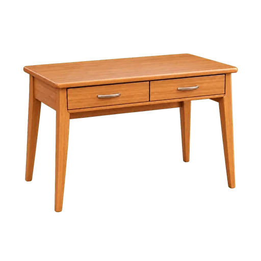
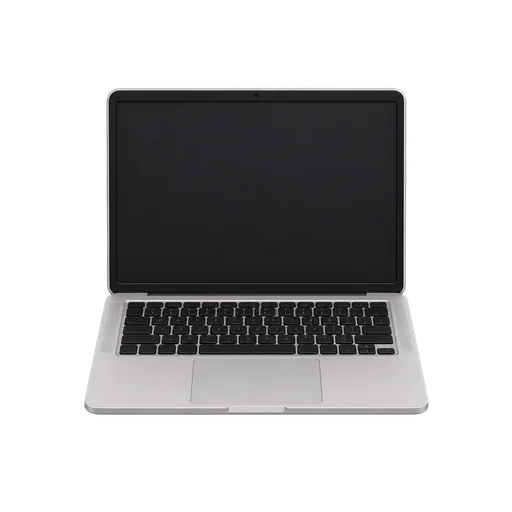
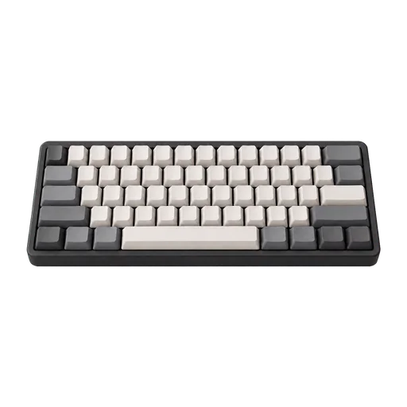
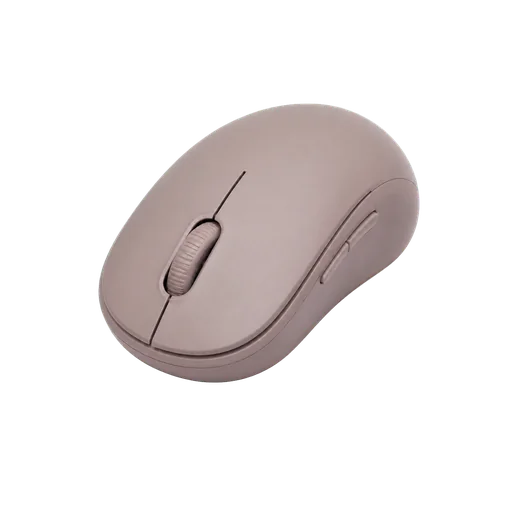
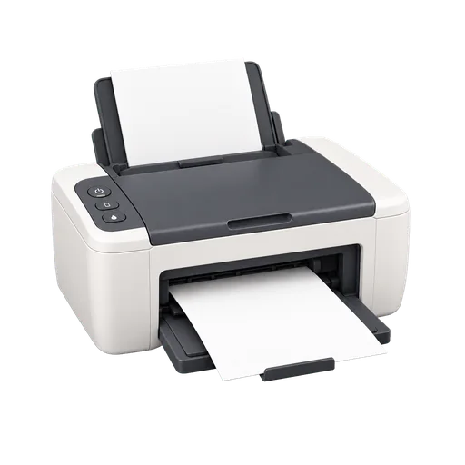
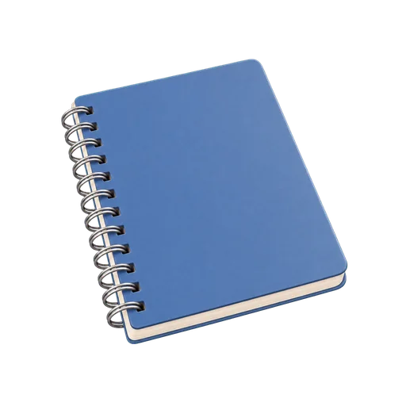
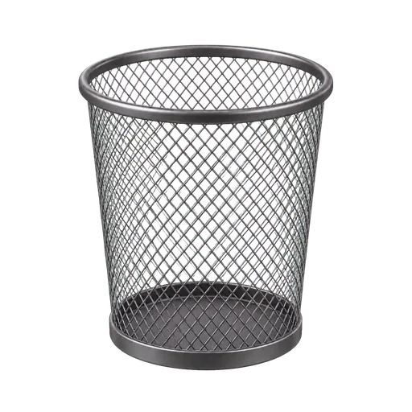

la scrivania
3 Beispielsätze
- Il computer è sulla scrivania.
- Lavoro alla scrivania.
- La scrivania ha due cassetti.
Wortschatz A1–A2
Betritt das Büro und entdecke jedes Wort anhand eines Bildes und drei italienischer Beispielsätze.








Lerne das Substantiv immer zusammen mit dem Artikel. So merkst du dir auch das Geschlecht des Wortes.
8 Übungen mit Bildern
Sieh dir das Bild an und schreibe das italienische Wort. Du kannst auch den Artikel schreiben; die angegebenen Synonyme werden akzeptiert.
8 freie Übersetzungssätze
Schreibe deine Übersetzung und vergleiche sie anschließend mit einer möglichen Lösung. Diese Aktivitäten werden auf deinem Gerät gespeichert, verändern aber nicht die Punktzahl.
Übersetzen Sie freiThe computer is on the desk.
Vorgeschlagene Lösung: Il computer è sulla scrivania.
Übersetzen Sie freiI write an email on the computer.
Vorgeschlagene Lösung: Scrivo un’email al computer.
Übersetzen Sie freiThe keyboard is in front of the computer.
Vorgeschlagene Lösung: La tastiera è davanti al computer.
Übersetzen Sie freiThe mouse is next to the keyboard.
Vorgeschlagene Lösung: Il mouse è accanto alla tastiera.
Übersetzen Sie freiI print the document.
Vorgeschlagene Lösung: Stampo il documento.
Übersetzen Sie freiI send the document by email.
Vorgeschlagene Lösung: Invio il documento per email.
Übersetzen Sie freiI take notes in the notebook.
Vorgeschlagene Lösung: Prendo appunti sul quaderno.
Übersetzen Sie freiI throw the paper in the wastebasket.
Vorgeschlagene Lösung: Butto la carta nel cestino.
Italiano con Martin
Zwei Lehrkräfte, zwei Perspektiven. Wählen Sie den Ansatz, der zu Ihren Interessen passt.